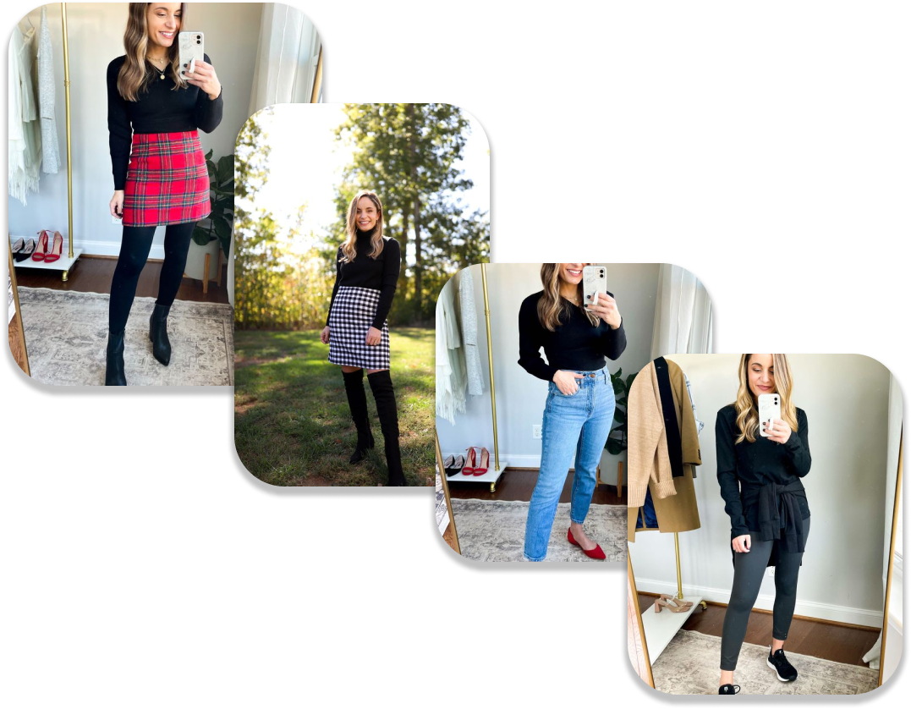
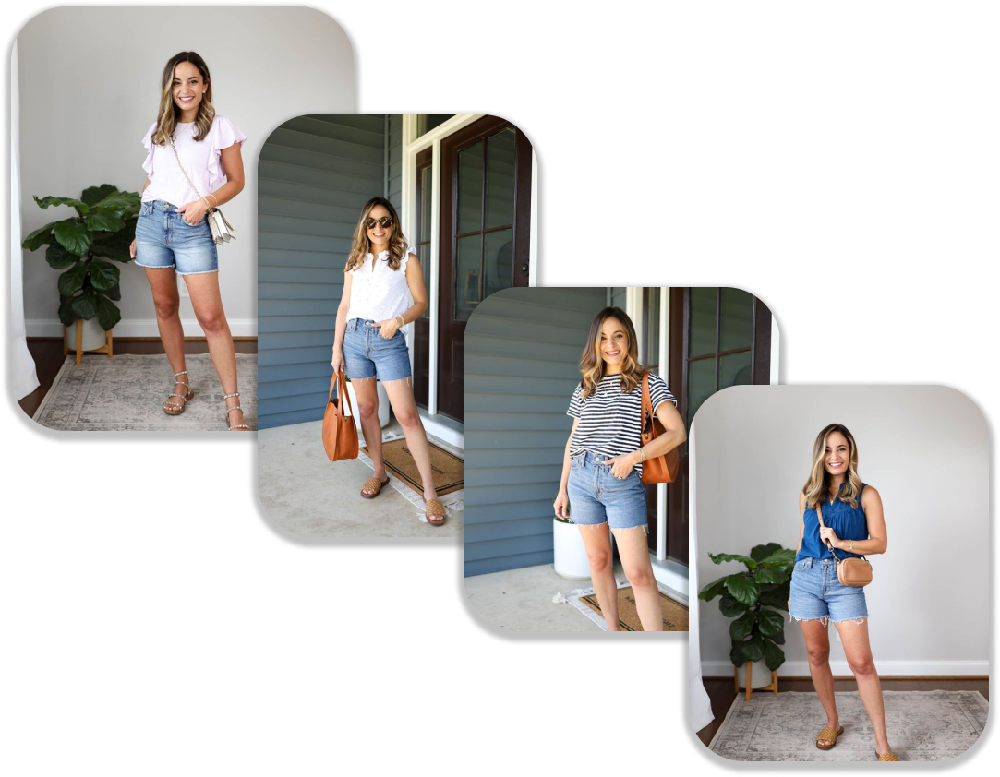
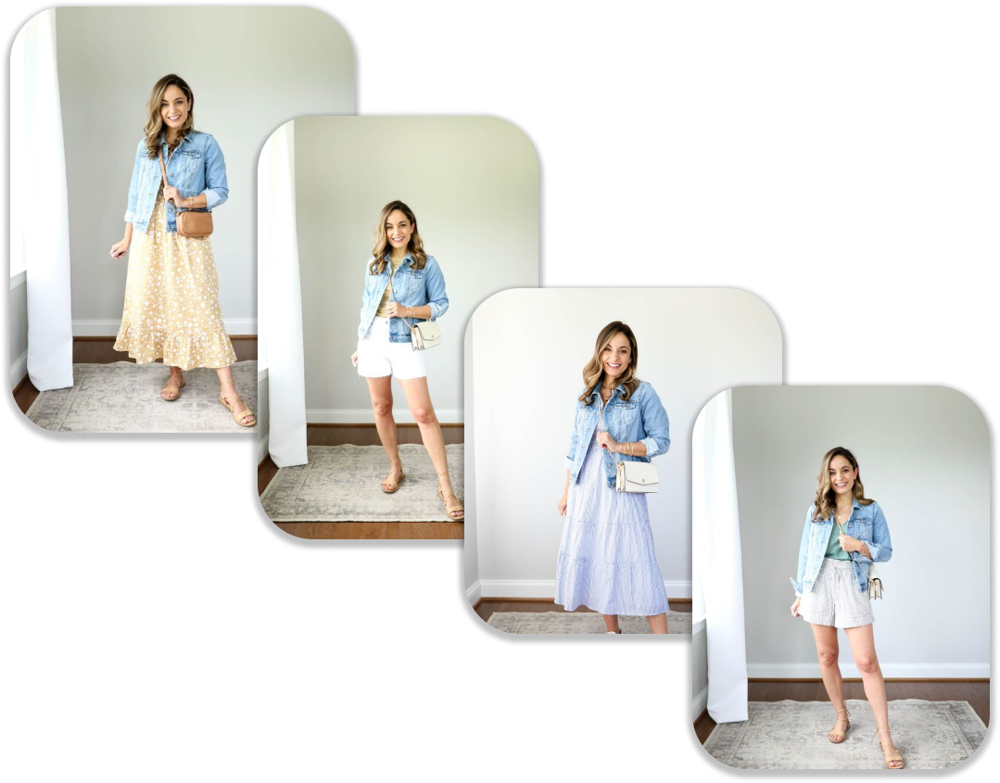

1.How To Style Blue Jean
Transforming a pair of boot cut jeans into a pair of skinny jeans is a quick, easy process. It is also a nice way to breathe new life into an old pair of jeans. As long as you have a sewing machine and some basic sewing knowledge, you should be able to complete this project in less than an hour
2.How To Style Black Jean
Wear Black Jeans with Neutrals Neutrals always work with other neutrals, so feel confident in pairing your black jeans with white, grey, cream and navy and button-ups. Grey and white shirts create a clean combo, while a monochromatic black shirt and jeans pairing adds subtle contemporary edge
3.How To Style White Skirt
Try a bodysuit as a fitted shirt option with a skirt Crop tops are also a good option and are very trendy right now. Of course you can also wear graphic tees, button downs, printed blouses, or really anything, but just keep it slim fit to balance out the fullness of the skirt.

4.How To Style Black Tshirt
Black shirts go beautifully with other pieces of clothing in the same color. You can wear it under a black blazer or a tailored trench; wear it over a pair of elegant slacks or sleek black denim. Of course, black shoes are always a must to complete the outfit for the perfect sense of dark elegance.
5.How To Style Polka Skirt
You can be bold and wear a pop of color with your dots (red is great), but if you're going for more of a simple style, then a black or white shirt is always a good choice, depending on the base color of your skirt. Throw on any pair of shoes you want with this print as anything could work!
6.How To Style White Pant
White pants make a great summertime addition to any wardrobe. If you want to wear them with a casual outfit, pair them with a solid-colored t-shirt and sneakers. Or, you could wear a chambray shirt and boots. If you're feeling adventurous, try wearing multiple white clothing items for a cool, monochromatic look.
7.How To Style Plain Dresses
A simple way to look smart is to dress smart. Choose clean, well-fitting clothes so you look professional and put together. A button-down shirt and slacks are always a good choice. A pair of good-looking, clean shoes will bring your outfit together

8.How To Style Shorts
For a more polished look, try out a button-down, a blazer, and loafers with your shorts this summer. Keep it casual while still adding a little something extra by opting for knit shorts instead of denim ones. No matter where you're headed, a black T-shirt will always serve you well.
9.How To Style Floral Dresses
If it's still a little chilly or you want to layer pieces over your flowy dress, denim jackets, leather jackets, and even cardigans can look great with a loose dress. They can also help dress up or down the look
